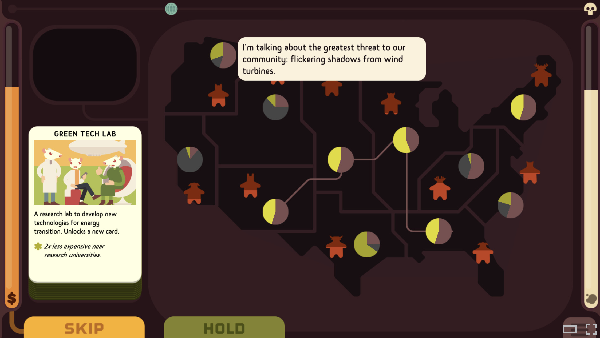
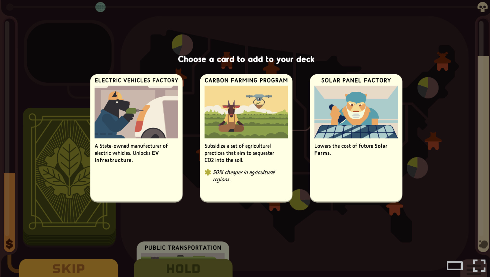
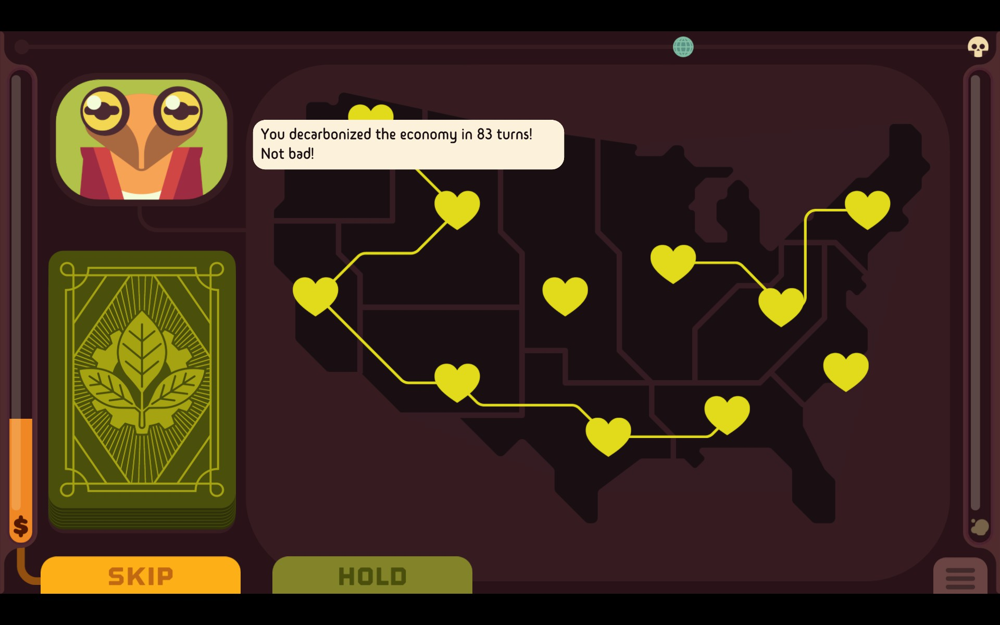
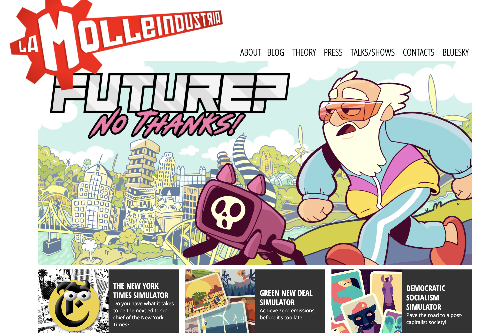

Waner Li
Project Summary

Green New Deal Simulator is a short political simulation game about decarbonizing the United States through renewable energy, infrastructure investment, employment policy, and political negotiation. Rather than simply raising awareness about climate change, the project focuses on communicating available climate solutions and the social, economic, and infrastructural challenges that shape their implementation.
Part 1 — Data Collection
Precedent
| Title | Author | Year | Format | Intended Audience |
|---|---|---|---|---|
| Green New Deal Simulator | Paolo Pedercini / Molleindustria | 2023 | Video game / political simulation / educational game | General public, students, educators, climate-conscious players, and players interested in political simulation and sustainability. |
What the Creator Has Said About the Project
| Title | Link | Format |
|---|---|---|
| Green New Deal Simulator – Release Notes | Molleindustria Blog | Developer blog |
| Green New Deal Simulator | Official Game Page | Official website |
| How Green New Deal Simulator Inspires Hope in a Climate-Changing World | Game Developer | Interview article |
Bibliography
| Pedercini, P. (2023, May 10). Green New Deal Simulator – release notes. Molleindustria. https://www.molleindustria.org/blog/green-new-deal-simulator-release-notes/ |
| Pedercini, P. (2023). Green New Deal Simulator [Official game page]. Molleindustria. https://www.molleindustria.org/GND/ |
| Canossa, A. (2023, May 16). How Green New Deal Simulator inspires hope in a climate-changing world. Game Developer. Interview with Paolo Pedercini. https://www.gamedeveloper.com/design/how-the-green-new-deal-simulator-inspires-hope-in-a-climate-changing-world |
What Others Have Written About the Project
| Title | Author | Link | Format |
|---|---|---|---|
| Green New Deal Simulator Brings the Vibes We Need | Ben Abraham | Greening the Games Industry | Review / appraisal / criticism |
| Green New Deal Simulator: Challenge Climate Change | Janelle Tecson | Medium | Online article / review |
| Persuasive Games: The Expressive Power of Videogames | Ian Bogost | MIT Press | Theory book |
| Game-Based Climate Change Engagement: Analyzing the Potential of Entertainment and Serious Games | Daniel Fernández Galeote and Juho Hamari | ACM Digital Library | Theory article |
Bibliography
| Abraham, B. (2023, May 18). Green New Deal Simulator brings the vibes we need. Greening the Games Industry. https://gtg.benabraham.net/green-new-deal-simulator/ |
| Tecson, J. (2023, May 16). Green New Deal Simulator: Challenge climate change. Medium. https://medium.com/@jantecson30/green-new-deal-simulator-challenge-climate-change-1dadaae34f70 |
| Bogost, I. (2007). Persuasive games: The expressive power of videogames. MIT Press. https://doi.org/10.7551/mitpress/5334.001.0001 |
| Fernández Galeote, D., & Hamari, J. (2021). Game-based climate change engagement: Analyzing the potential of entertainment and serious games. Proceedings of the ACM on Human-Computer Interaction, 5(CHI PLAY), Article 226. https://dl.acm.org/doi/10.1145/3474653 |
Part 2 — Layers of Analysis
1. Ontological Analysis

The project is built from several interrelated components: a map of the United States, a card-based policy system, energy infrastructure, emissions indicators, employment goals, political support, regional differences, and visual data displays. The game asks the player to place investments and policies across space, making decarbonization not only a technical problem but also a geographic and political one.
Its main building blocks include renewable energy projects, fossil fuel systems, electrical grids, transportation and heating fuels, rural and urban regions, jobs, emissions, and political resistance. The interface avoids exposed numerical data and instead uses bars, icons, charts, and spatial representation to communicate systemic change.
2. Historical and Contextual Analysis

The game was created in the context of intensifying climate crisis, post-2019 Green New Deal discourse in the United States, and growing public debate around energy transition, jobs, infrastructure, and political polarization. Pedercini positions the project as a response to the idea that climate culture should no longer only raise awareness of catastrophe, but also raise awareness of solutions.
The project also responds to other climate-oriented games such as Half-Earth Socialism, Beecarbonize, and Terra Nil. However, unlike those projects, Green New Deal Simulator focuses on the United States, the present moment, and the possibility of acting within existing political and economic structures. Its intended audience includes players who may not have technical knowledge about energy policy but can still learn through a simplified, interactive system.
3. Visual and Aesthetic Analysis

The game uses a minimal, cartoon-like visual language with flat colors, simple icons, talking animals, charts, and drag-and-drop interactions. This aesthetic makes the project accessible and almost child-friendly while still addressing complex political and environmental issues. The visual style also continues Molleindustria’s broader tradition of political satire and accessible simulation design.
Its representation is closer to an infographic, educational diagram, or political cartoon than to a realistic simulation. This choice supports the author’s argument that realism in games is often an aesthetic rather than a guarantee of truth. By using simplified visuals and avoiding exact numbers, the game encourages qualitative understanding of systems rather than treating the model as a scientific prediction.
Part 3 — Final Submission
1. Relational Diagram

2. Methodology: Software, Data, and Theoretical Approach
The methodology of Green New Deal Simulator combines simplified simulation, policy modeling, spatial representation, and persuasive game design. Instead of presenting climate transition as a linear story, the game turns it into an interactive system where the player must manage relationships between energy production, infrastructure, emissions, jobs, and political support. Its software approach is based on lightweight, accessible interaction: players drag and place cards onto a map, read visual indicators, and respond to changing political and environmental conditions.
The project uses real-world climate and energy issues as its conceptual foundation, but it does not attempt to function as a scientific model. Pedercini explicitly avoids exposed numbers and precise quantitative prediction. This choice makes the game’s data use intentionally qualitative: research about renewable energy, fossil fuels, electrification, grid infrastructure, and employment is translated into visual bars, cards, and regional relationships. The theoretical method behind the project is close to persuasive games and procedural rhetoric, where rules, constraints, and player actions form the argument of the work.
3. Rhetorical Analysis
The central argument of Green New Deal Simulator is that climate change is not only a problem of awareness, but a problem of implementation. The game argues that solutions already exist, but they are blocked by political resistance, uneven geography, infrastructure limitations, and economic interests. By making the player constantly negotiate between emissions reduction, job creation, regional development, and political support, the project shows that decarbonization is a systemic process rather than a single technological fix.
The project is critical because it questions the common idea that climate action can be solved through individual consumer choices, such as simply driving an electric car. It also criticizes the belief that technology alone can solve climate change without political and infrastructural transformation. The game’s rhetoric comes from its mechanics: the player learns that renewable energy, electrification, transmission lines, labor policy, and regional politics are interdependent. In this sense, the project does not only communicate a message about climate policy; it makes the player experience the difficulty of coordinating a transition.
4. The Project within the Author’s Wider Practice

Green New Deal Simulator fits closely within Paolo Pedercini’s wider practice through Molleindustria, which often uses small, accessible games to critique political, economic, and technological systems. Pedercini’s works are usually not neutral entertainment products; they are political models that ask players to interact with systems of power.
Green New Deal Simulator also continues Molleindustria’s broader commitment to critical play. Rather than creating a large commercial simulation, Pedercini makes a compact, legible, and openly political game. This aligns with his practice of using games as tools for public argument, education, and critique. Green New Deal Simulator can therefore be understood not as an isolated climate game, but as part of a larger body of work that uses game mechanics to expose how political and economic systems operate.
5. Personal Assessment: Appraisal and Criticism
I find Green New Deal Simulator effective because it makes climate policy feel understandable without making it feel simple. Its strongest quality is that it shifts attention away from abstract climate anxiety and toward concrete systems of action: energy grids, regional investment, jobs, transportation, heating, and political support. The visual interface is approachable, but the underlying relationships are complex enough to make the player understand that climate transition requires coordination across many scales.
At the same time, the project’s strength is also its limitation. Because the game is small and minimalistic, many political and economic conflicts are necessarily simplified. Issues such as global inequality, Indigenous land rights, financing, corporate lobbying, and international climate responsibility are not deeply developed. The fixed map and limited cards can also make the project feel more like a puzzle than an open-ended political simulation. However, this limitation is partly intentional: the game does not claim to be a complete model of climate transition. Its value is that it creates a clear, playable argument about why climate solutions must be infrastructural, political, and collective.